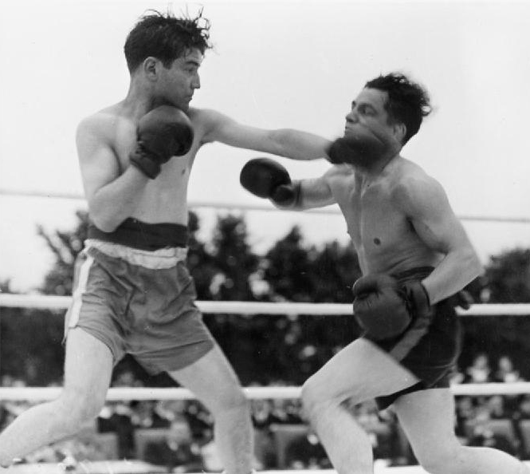
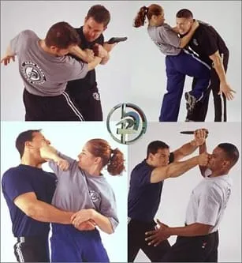

Krav Maga vznikla jako praktický systém sebeobrany a přebírá techniky z několika různých bojových umění. Velkou roli v jejím vývoji sehrály prvky z boxu, především práce rukou, údery, kryty a pohyb na nohách. Další důležitou složkou je zápas (wrestling), ze kterého pochází různé hody, páky a techniky na kontrolu protivníka. Z juda převzala principy rovnováhy, pákové techniky a reakce na držení nebo pokusy o stržení. Tyto disciplíny pomohly vytvořit základ, který je jednoduchý, účinný a vhodný pro rychlé použití v reálných situacích.


Krav Maga ale čerpá také z dalších systémů, zejména pokud jde o obranu proti kopům nebo vícenásobným útočníkům. Některé techniky kopů a práce s dálkou jsou inspirovány taekwondem nebo karate, i když jsou upravené tak, aby byly maximálně praktické. Důraz na rychlou reakci a využití instinktivních pohybů je ovlivněn skutečnými bojovými zkušenostmi zakladatele i vojenským výcvikem. Systém využívá i principy moderních bojových sportů, aby byly techniky stále aktuální a efektivní. Díky kombinaci více zdrojů je Krav Maga dynamický, realistický a univerzální způsob sebeobrany.